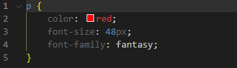

Le CSS
CSS (Cascading Style Sheets) est le langage qui donne vie à la présentation visuelle des pages web, en permettant de définir l'apparence et la mise en forme des éléments HTML. En utilisant des règles de style, CSS offre un contrôle précis sur la disposition, la couleur, la police et d'autres aspects visuels d'une page. Son approche de style "cascading" permet une gestion efficace des styles, avec la possibilité de définir des styles par défaut, tout en permettant des adaptations spécifiques à des éléments particuliers. En combinant HTML et CSS, les développeurs peuvent créer des sites web attrayants, bien structurés et faciles à naviguer, offrant ainsi une expérience utilisateur optimale. Une ligne de code ce termine toujours par ";".
Intégrer du css au html
Il existe deux manière d'intégrer du css a une page web; directement sur le fichier html et sur un fichier externe. La métode la plus utilisée est d'intéger le css grace a un fichier css externe car cela facilite la lisibilité du document. Pour intéger du css grace a un fichier externe, il faut mettre dans le <head> ceci :
<link rel="stylesheet" type="text/css" href="stylesheet.css">
note: il faut que le fichier html et le fichier css soit dans le même dossier. Dans ce cas, le fichier s'appelle stylesheet.css
Le commentaire
Pour intégrer un commentaire en css on utilise "/* */"" qui est utilisée pour étaler un commentaire sur une ou plusieurs lignes.
Les sélecteurs
Les sélecteurs CSS sont utilisés pour cibler des éléments HTML spécifiques. Par exemple, le sélecteur de type cible tous les éléments d'un certain type (par exemple, p pour les paragraphes), et le sélecteur de classe cible les éléments avec une classe spécifique (par exemple, .maClasse).
cliquez ici pour essayer
note : pour que le selecteur affecte tout les éléments, il faut utiliser le selecteur body
Propriétés et valeurs
Les règles CSS consistent en des propriétés et des valeurs. La propriété spécifie l'aspect à styliser, et la valeur définit comment elle doit être stylisée.
Dans l'exemple précedant, color est la propriété et blue est la valeur.
Le texte
Nous allons voir ce que l'on peur faire pour transformer un paragraphe (<p>)
color
La propriété color nous permet de changer la couleur du texte. exemple :
On peut aussi utiliser un HEX code (#c5c8c6), un code rgba (rgba(125,50,20,0.80)) qui est comme un code rgb mais le dernier chiffre représente l'oppacité de la couleur
cliquez ici pour essayerfont-size
font-size définit la taille de la police. Il y a plusieurs unitée mais ici on utilise px (pixels)
cliquez ici pour essayer
font-family
font-family définit la police d'écriture. exemple :
cliquez ici pour essayer
text-decoration
text-decoration permet de décorer le texte avec des lignes, des traits etc... exemple:
cliquez ici pour essayer
text-align
text-align permet de positioner le text au centre (center) à gauche (left) etc... exemple :
cliquez ici pour essayer
Le fond d'écran
Nous allons voir comment mettre un fond d'écran.
Sur quel sélecteurs ?
Le fond d'écran ne s'applique que sur le sélecteur désigné. exemple :
note : Pour que le fond d'écran s'applique pour toute la page web, il faut mettre dans le selecteur body.
cliquez ici pour essayerbackground-color
background-color suivit de la couleur désirée, soit en hex code ou en code rgb, rgba ou même juste le nom de la couleur (parmis celles suportées), nous permet de changer la couleur du fond. exemple :
cliquez ici pour essayer
background-image
On peut aussi mettre une image comme fond d'écran. exemple :
cliquez ici pour essayer
background-size
Dans l'exemple précedant, parce que l'image étais trop petite, elle c'est répéter comme une sorte de grille. Pour empécher cela, on utilse background-size et cover. exemple :
cliquez ici pour essayer
Les box
Le modèle de boîte CSS décrit comment les éléments HTML sont rendus dans le navigateur, en les considérant comme des boîtes rectangulaires comprenant le contenu (content), la marge (margin), la bordure (border) et le rembourrage (padding). exemple:
Contenu (content)
Le contenu d'un élément est la partie interne de la boîte, qui contient le texte, les images, les liens ou tout autre élément que l'élément HTML représente.
Le rembourage (padding)
Le rembourrage est l'espace entre le contenu et la bordure de l'élément. Il détermine la distance entre le contenu de l'élément et sa bordure. Le rembourrage peut être ajusté à l'aide des propriétés CSS telles que, padding-right, padding-bottom et padding-left.
La bordure (border)
La bordure est la ligne qui entoure le rembourrage et le contenu d'un élément. Elle peut avoir une largeur, un style (comme solide, pointillé, etc.) et une couleur définis. La propriété border permet de définir la largeur, le style et la couleur de la bordure simultanément, ou vous pouvez utiliser des propriétés spécifiques telles que border-width, border-style et border-color.
La marge (margin)
La marge est l'espace situé à l'extérieur de la bordure de l'élément, qui définit la distance entre la bordure de l'élément et les éléments adjacents. Elle peut être ajustée avec les propriétés CSS telles que margin-top, margin-right, margin-bottom et margin-left. exemple :
Les couleurs présente ici sont la pour représenter le padding, la border et le margin. Pour voir ces couleurs sur sa page web, il faut faire clique droit sur l"élément puis aller dans "inspecter" puis dans "style".
cliquez ici pour essayer
Le positionnement
En CSS, la propriété position est utilisée pour définir la méthode de positionnement d'un élément dans une mise en page. Les valeurs possibles pour la propriété position sont les suivantes :
Le texte "autre élément" est placé juste avant l'image dans chaque exemple présent ici.
static
C'est la valeur par défaut. Les éléments sont positionnés en fonction de l'ordre normal du document. Les propriétés top, right, bottom, et left n'ont aucun effet lorsque position est static. exemple :
relative
L'élément est positionné relativement à sa position normale dans le flux du document. Cela signifie que vous pouvez déplacer l'élément à partir de sa position normale en utilisant les propriétés top, right, bottom, et left.exemple :
cliquez ici pour essayer
absolute
L'élément est retiré du flux du document et est positionné par rapport à son conteneur le plus proche avec une position relative ou absolue. Si aucun conteneur n'a une position relative ou absolue, il sera positionné par rapport au <html>. Les propriétés top, right, bottom, et left sont utilisées pour définir la position.
cliquez ici pour essayer
fixed
L'élément est retiré du flux du document et reste fixe par rapport à la fenêtre du navigateur, même lorsque la page est défilée. Les propriétés top, right, bottom, et left sont utilisées pour définir la position. exemple :
cliquez ici pour essayer
sticky
L'élément est traité comme position relative jusqu'à ce qu'il atteigne un certain point pendant le défilement, après quoi il est traité comme fixed. C'est une combinaison de relative et fixed. exemple :

cliquez ici pour essayer